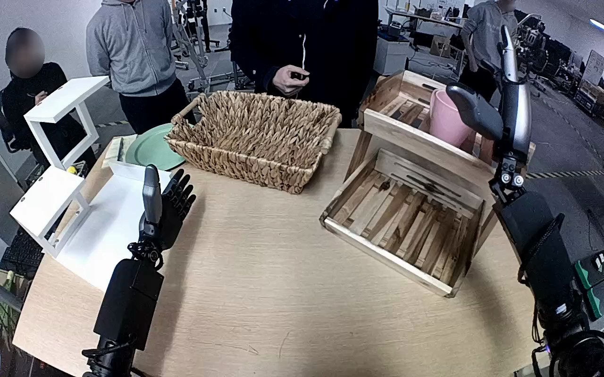

NVIDIA GR1 · 13
Video 13

Annotation
From the dedicated visual review of this video (humanoid_action_v1). Plain text · JSON
Observed outcome
Outcome
The pink mug is removed from the upper shelf and released upright onto the tan tabletop.
Terminal state
At source frame 119 the pink mug stands upright on the tan tabletop in front of the wooden shelf, with the inside/bottom of the mug visible and its handle pointing leftward in the image. The right hand is open above and beside its rim, no longer enclosing the body; left hand remains open at the opposite side.
Hand roles
- Right
Sole manipulating hand: closes around mug body, lifts from shelf, carries toward the foreground table, lowers, and opens to release.
- Left
Remains open and approximately stationary over the opposite tabletop area; does not stabilize, grasp, support or receive the mug.
- Coordination
One-hand manipulation with no transfer, coordinated second-hand support, locomotion, or interaction with the watching people.
Coordination
The right hand performs the complete mug relocation; the open left hand does not participate.
Robot-side evidence
- Basis
The camera looks outward between the robot forearms, which extend from the lower near-body corners toward the table rather than facing the robot front. The active limb can be followed continuously through the lower-right arm assembly to the hand at the shelf. Its thumb opposes the curled fingers on the inward side during grasp; the opposite open hand and thumb orientation corroborate the robot-relative left/right convention. This supports naming the active limb right, consistent with but independently visually checked against the instruction.
- Confidence
high
- Limitations
Torso and shoulder attachments are outside the frame; naming uses the outward first-person forearm orientation and visible hand anatomy.
Chronology
| Frames | Observation |
|---|---|
| 0–36 | Right arm holds an open hand beside and over the pink mug on the upper shelf, making small adjustments while left hand stays open over the table. |
| 37–60 | Right hand descends around the mug body and closes opposing digits on its sides. The mug tilts slightly as the grasp takes hold; the handle remains outside the hand on the mug left in the image. |
| 61–74 | Right arm raises the gripped mug clear of the upper wooden shelf tier. |
| 75–94 | Right arm carries the mug toward the robot and inward over the tabletop in front of the shelf, lowering it toward the open table area. The left hand remains uninvolved. |
| 95–108 | Right hand lowers and steadies the upright mug at tabletop height in front of the shelf while continuing to enclose its body. |
| 109–119 | Right hand opens and moves its digits away from the mug body. The mug briefly shifts/tilts during separation, then stands upright on the tabletop in the final frame; the open right hand hovers above/beside it. |
Uncertainties
- Exact fingertip contact distribution on the back of the mug is occluded during grasp; the enclosing body grasp and subsequent lift are visible.
- Torso/shoulder origins lie outside the camera view; anatomical naming is supported by the outward forearm arrangement and hand/thumb anatomy rather than direct shoulder attachment.
Complete review record action_review.json
{
"prompt_protocol": "humanoid_action_v1",
"prompt_provenance": "visually_authored_from_video_and_initial_frame",
"reviewed_contact_sheets": [
"sheet_001.jpg"
],
"inspected_frame_stride": 2,
"inspected_sampled_frame_count": 60,
"initial_scene": "Robot-facing egocentric view over a tan tabletop: pink handled mug stands on the upper tier of the wooden shelf to the robot right; right hand is open around/above it and left hand is open above the table. A wicker basket is behind the eventual placement area. People watch from across the table without manipulating the mug.",
"observed_sequence": [
{
"start_frame": 0,
"end_frame": 36,
"action": "Right arm holds an open hand beside and over the pink mug on the upper shelf, making small adjustments while left hand stays open over the table.",
"confidence": "high"
},
{
"start_frame": 37,
"end_frame": 60,
"action": "Right hand descends around the mug body and closes opposing digits on its sides. The mug tilts slightly as the grasp takes hold; the handle remains outside the hand on the mug left in the image.",
"confidence": "high"
},
{
"start_frame": 61,
"end_frame": 74,
"action": "Right arm raises the gripped mug clear of the upper wooden shelf tier.",
"confidence": "high"
},
{
"start_frame": 75,
"end_frame": 94,
"action": "Right arm carries the mug toward the robot and inward over the tabletop in front of the shelf, lowering it toward the open table area. The left hand remains uninvolved.",
"confidence": "high"
},
{
"start_frame": 95,
"end_frame": 108,
"action": "Right hand lowers and steadies the upright mug at tabletop height in front of the shelf while continuing to enclose its body.",
"confidence": "high"
},
{
"start_frame": 109,
"end_frame": 119,
"action": "Right hand opens and moves its digits away from the mug body. The mug briefly shifts/tilts during separation, then stands upright on the tabletop in the final frame; the open right hand hovers above/beside it.",
"confidence": "high"
}
],
"arm_hand_roles": {
"right": "Sole manipulating hand: closes around mug body, lifts from shelf, carries toward the foreground table, lowers, and opens to release.",
"left": "Remains open and approximately stationary over the opposite tabletop area; does not stabilize, grasp, support or receive the mug.",
"coordination": "One-hand manipulation with no transfer, coordinated second-hand support, locomotion, or interaction with the watching people."
},
"anatomical_side_evidence": {
"basis": "The camera looks outward between the robot forearms, which extend from the lower near-body corners toward the table rather than facing the robot front. The active limb can be followed continuously through the lower-right arm assembly to the hand at the shelf. Its thumb opposes the curled fingers on the inward side during grasp; the opposite open hand and thumb orientation corroborate the robot-relative left/right convention. This supports naming the active limb right, consistent with but independently visually checked against the instruction.",
"confidence": "high",
"limitations": "Torso and shoulder attachments are outside the frame; naming uses the outward first-person forearm orientation and visible hand anatomy."
},
"coordination": "The right hand performs the complete mug relocation; the open left hand does not participate.",
"outcome": "The pink mug is removed from the upper shelf and released upright onto the tan tabletop.",
"terminal_state": "At source frame 119 the pink mug stands upright on the tan tabletop in front of the wooden shelf, with the inside/bottom of the mug visible and its handle pointing leftward in the image. The right hand is open above and beside its rim, no longer enclosing the body; left hand remains open at the opposite side.",
"uncertainties": [
"Exact fingertip contact distribution on the back of the mug is occluded during grasp; the enclosing body grasp and subsequent lift are visible.",
"Torso/shoulder origins lie outside the camera view; anatomical naming is supported by the outward forearm arrangement and hand/thumb anatomy rather than direct shoulder attachment."
],
"annotation_discrepancies": [],
"evidence_frame_indices": [
0,
38,
58,
68,
90,
106,
114,
119
],
"selected_execution_status": "success",
"inspection_coverage": {
"contact_sheet": "All 60 samples, source frames 0 through 118 at stride 2, visually inspected.",
"native_source_initial_png": true,
"native_transition_and_final_frames": [
38,
58,
68,
90,
106,
114,
119
],
"complete_source_retained": true
},
"video_id": "13",
"dataset": "NVIDIA_GR1_100",
"dedicated_review_agent": "review_gr1_13",
"review_source_video": "NVIDIA_GR1_100/13/original/original.mp4",
"source_frame_count": 120,
"source_fps": 20.0,
"native_detail_frames": [
38,
58,
68,
90,
106,
114,
119
],
"world_model_prompt": "The robot closes its right hand around the body of the pink mug on the upper shelf and lifts it clear. It carries the mug onto the tan tabletop in front of the shelf, lowers it upright, and opens its hand to release it, leaving the mug standing on the table. Keep the camera fixed; preserve robot geometry, physically valid joint motion, and normal gripper opening and closing.",
"original_task_instruction": "Use the right hand to pick up pink mug from top level of the shelf to tan table.",
"selected_segment": {
"start_frame": 0,
"end_frame_exclusive": 120,
"reason": "Complete original single-task reference; no cropping or trimming requested."
},
"source_video_sha256": "9e1823c4a94640fac799f61c16a10e0fb1ca1a63459ec1f8801d8a49b1b341b4",
"review_completed_at": "2026-10-13T17:44:19.038304+00:00"
}